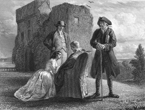

|
|
||||
|
|
Home | Corson Collection | Biography | Works | Image Collection | Recent Publications | Portraits | Correspondence | Forthcoming Events | Links | E-Texts | Contact Guy ManneringFirst Edition, First Impression: Guy Mannering; or The Astrologer. By the Author of "Waverley." In Three Volumes. Vol. I (II-III). Edinburgh: Printed by James Ballantyne and Co. For Longman, Hurst, Rees, Orme, and Brown, London; and Archibald Constable and Co. Edinburgh 1815. Composition | Sources | Synopsis | Reception | Links
Guy Mannering was advertised as in the press on 21 December 1814, only two days after Scott had finished writing the notes to The Lord of the Isles. Scott appears to have written Guy Mannering in little more than six weeks, beginning late December 1814 and completing it by mid-February 1815. So rapid was its composition that novel and poem were effectively published and promoted in tandem, providing Scott with a unique opportunity to compare the selling power of verse and fiction. The latter proved conspicuously more lucrative. When Guy Mannering was published on February 24, 1815, the Edinburgh share of the first edition sold out in less than a day. Two further editions were published in March and May, and the novel went through eleven editions in Scott's life-time. The title page attributed the novel to 'the author of Waverley', a phrase that would be used for all Scott's novels until he cast off his disguise in 1827. SourcesGuy Mannering is located chiefly in Galloway, in the south-west of Scotland, in the late eighteenth century. Traditionally, Scott's chief source for the story been has identified as Joseph Train, a Galloway exciseman and amateur antiquarian, who initiated a correspondence with Scott in July 1814. According to Scott's first biographer, his son-in-law J. G. Lockhart, he had encouraged Train to supply him with Galloway traditions. Train had subsequently sent a collection of anecdotes on Galloway gypsies and the local story of an astrologer who, predicting the future of a newborn child, accurately warned of great dangers that would befall him on his twenty-first birthday. Both, in Lockhart's account (based on Train's own published recollections), worked their way into the novel. Peter D. Garside, however, editor of the recent Edinburgh Edition of Guy Mannering (1999), finds little evidence that Train supplied such information before the preparation of the Magnum Opus edition of the novel in 1829. Garside argues that a more plausible source was Scott's sister-in-law Elizabeth McCulloch Scott, a noted repository of Galloway lore. There are close parallels between the history of the Bertram family, as described in chapter 2 of Guy Mannering, and that of Elizabeth's family, the McCullochs of Ardwall, who long tolerated on their lands the gypsy 'king' Billy Marshall.  SynopsisThe hero, Harry Bertram, son of the Laird of Ellangowan, is kidnapped as a boy by the smuggler Dirk Hatteraick and carried off to Holland. Hatteraick is acting in league with the Bertrams' lawyer, Gilbert Glossin, who hopes to acquire the family property in the absence of a male heir. Adopted by a Dutch merchant, Bertram is kept in ignorance of his true identity and brought up under the name Vanbeest Brown. Upon reaching adulthood, he travels to India and enlists in the army under Colonel Guy Mannering. Mannering, an enthusiastic amateur astrologer, has in a previous guise visited the Bertrams' castle of Ellangowan, and predicted the newborn Harry's future. Bertram falls in love with Mannering's daughter, Julia, but Mannering imagines that the attentions paid to his daughter are intended for his wife. He challenges Bertram to a duel, seriously wounds him, and leaves him for dead. On recovery, Bertram finds that Julia has returned to Britain. In disguise, he follows her to the neighbourhood of Ellangowan. Glossin, now sole owner of Ellangowan, detects his true identity, and again plots with Hatteraick to abduct him. However, Meg Merrilies, Bertram's gypsy nurse, recognizes him too, and with the help of Bertram and Dandie Dinmont (a Lowland farmer whom Bertram has rescued from footpads), attempts to thwart their scheme. This she succeeds in doing but at the expense of her own life. As a result of her efforts, Bertram is acknowledged, regains his estates, and marries Julia.
ReceptionGuy Mannering was an immediate success with the reading public, the Edinburgh share of the first edition selling out within a day. Within three months the second and third impressions were similarly exhausted. The reviewers, though, harboured reservations. The British Critic felt that the genius shown in Waverley had already flickered out. The Critical Review and the Quarterly feared that the extensive use of Scots would prove incomprehensible to an English audience. The former complained too that it encouraged superstition, condoned duelling, and was irreverent in matters of religion. There was widespread praise, however, of the vividly portrayed minor characters, Dandie Dinmont and Meg Merrilies, the latter bringing comparisons with Shakespeare. Links
Last updated: 19-Dec-2011 |
|||